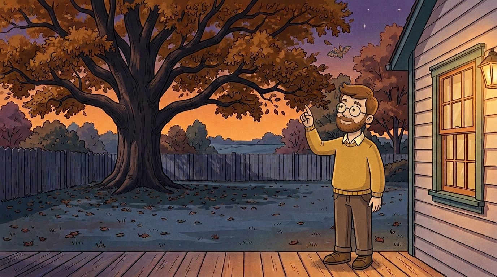
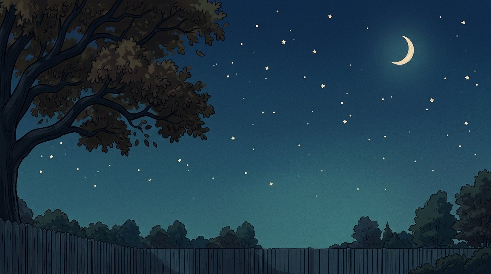
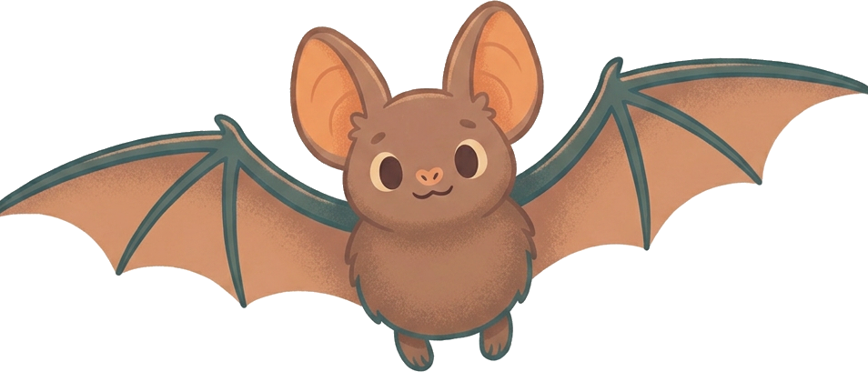
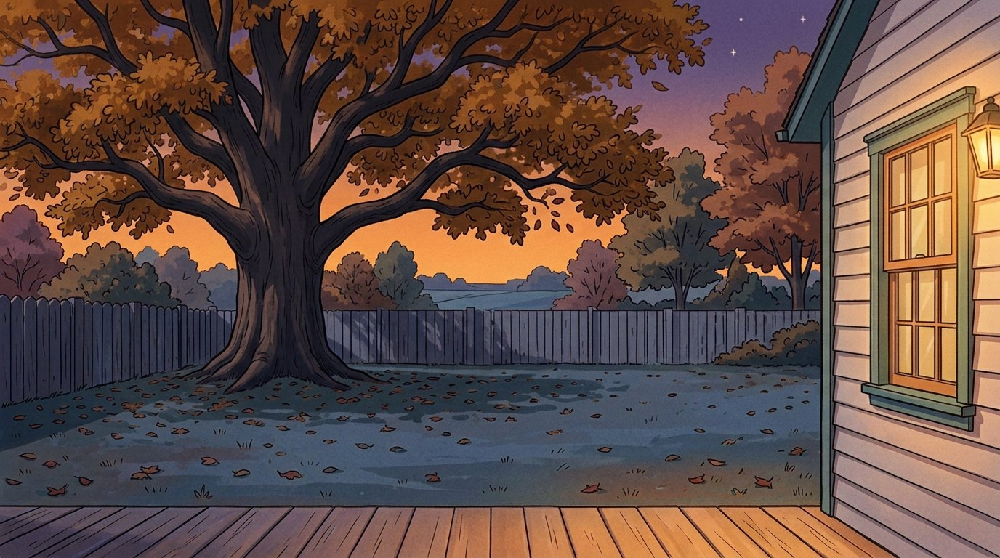
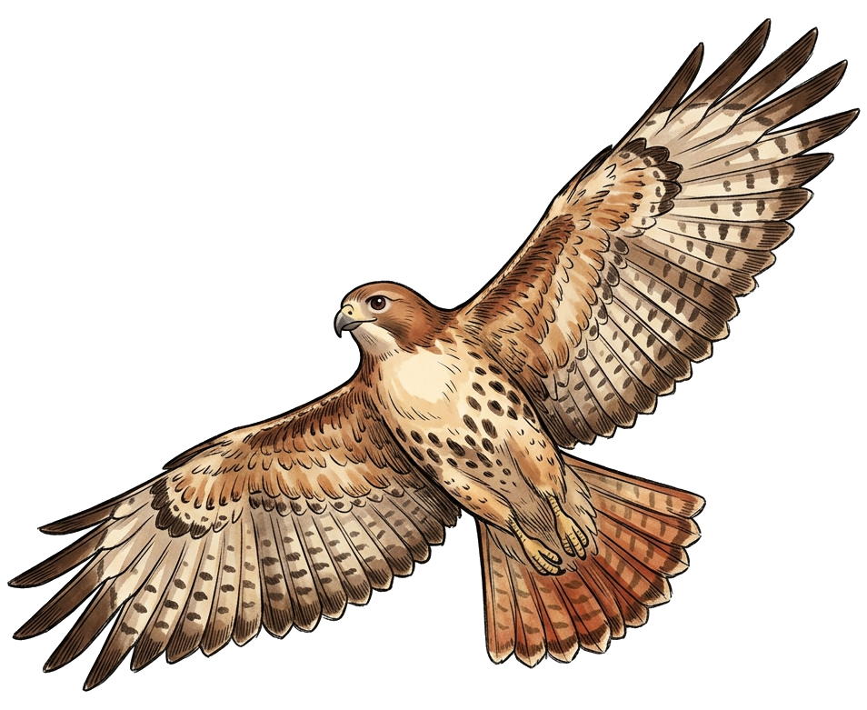
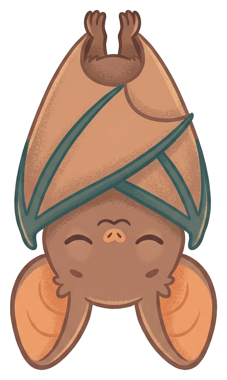

The
Bat Lab
Bat Lab
Be the bat: find moths in the pitch dark by timing your echoes. Then pick the minute you wake up.
Two games from the episode Why Do Bats Come Out at Night? · Subscribe for a new mystery every week


🦋 0 / 5
sound slowed down 190 times, so you can see it

You are the bat, and it is pitch dark. Tap to shout a click. Watch for an echo, then tap the moth it came from!
Your echoes will show up here: how long the sound took to come back, and how far away that makes the moth.



6:00 pm
Pick the minute the bat wakes up. Too early and the hawks are still hunting. Too late and dinner is gone.
🦅 hawks hunting
🦋 moths in the air